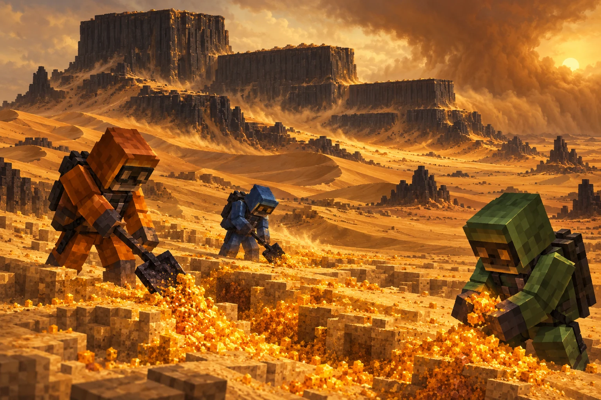

Walk a living desert
Dunes, oasis trees, cave sietches and darkstone formations up to three plateaus high. Find shelter before the Arrakis sun finds you.
PROJECT DUNE / MINECRAFT REALMS
The desert world. Spice, survival, sietches and Shai-Hulud.
01 / ARRAKIS FIELD NOTES
Water is precious. Spice is power. Every expedition begins with a stillsuit and ends with a story.

Dunes, oasis trees, cave sietches and darkstone formations up to three plateaus high. Find shelter before the Arrakis sun finds you.
Use the tagged Spice Harvest Shovel to collect melange. Sell for Solaris, fill CHOAM quotas, or work a player-sponsored spice contract.
A desert-skinned Sniffer carries the sandworm’s form, with native zombie AI. Survive the encounter; its death leaves a rich spice field.
A WORD FROM THE SPACING GUILD
A sighting begins with coordinates on Arrakis. Fifteen real minutes later, the Guild announces it across the proxy network.